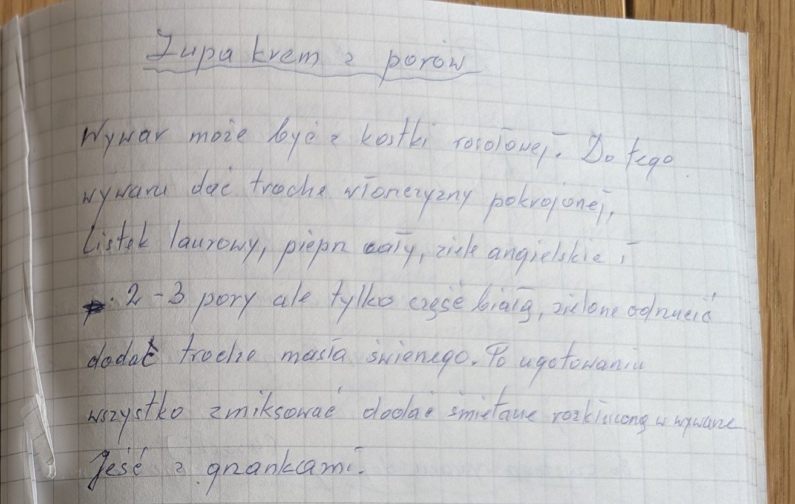
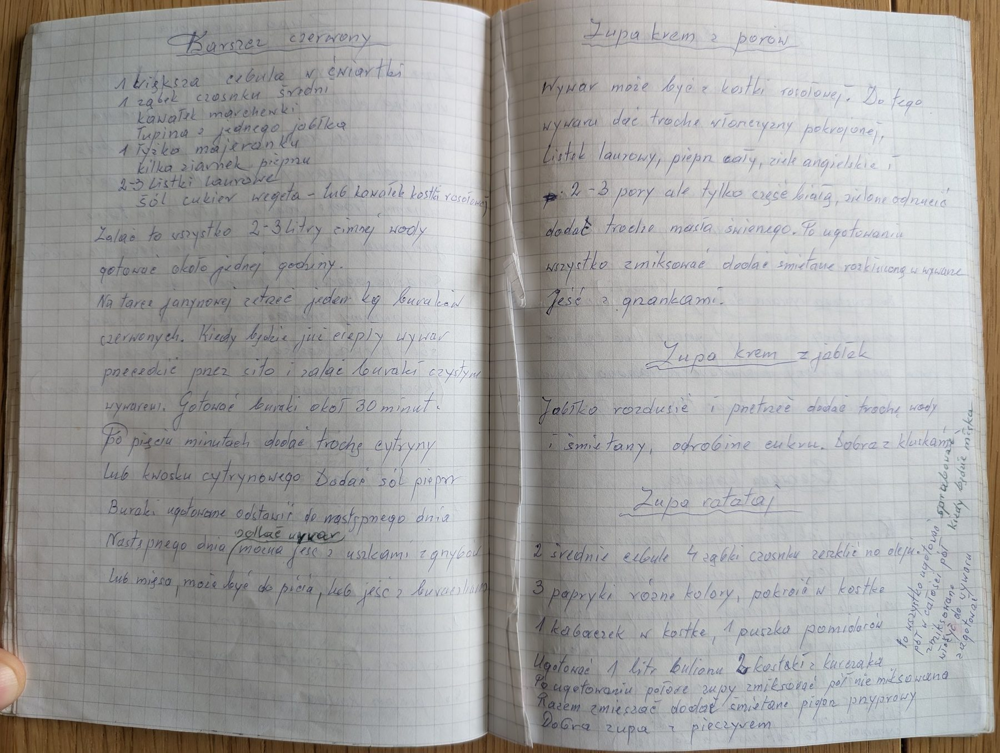

Zupa krem z porów


Składniki
- wywar (może być z kostki rosołowej)
- trochę włoszczyzny
- liść laurowy
- pieprz cały
- ziele angielskie
- 2-3 pory (tylko biała część)
- trochę świeżego masła
- śmietana
- grzanki
Przygotowanie
- Do wywaru dodać pokrojoną włoszczyznę, liść laurowy, pieprz i ziele angielskie.
- Dodać białą część 2-3 porów (zieloną odrzucić) i trochę masła, ugotować.
- Wszystko zmiksować, dodać śmietanę rozkłóconą w wywarze.
- Jeść z grzankami.
Oryginalny zapis
Zupa krem z porów Wywar może być z kostki rosołowej. Do tego wywaru dać trochę włoszczyzny pokrojonej, listek laurowy, pieprz cały, ziele angielskie i 2-3 pory ale tylko część białą, zielone odrzucić dodać trochę masła świeżego. Po ugotowaniu wszystko zmiksować dodać śmietanę rozkłóconą w wywarze Jeść z grzankami.